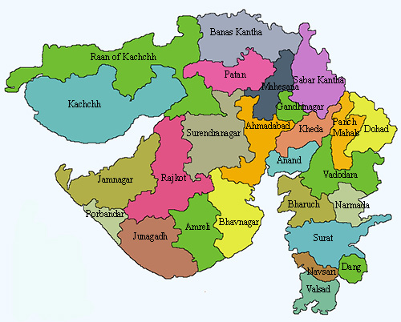

Image Map Generated
The HTML <map> tag defines an image map. An image map is an image with clickable areas. The areas are defined with one or more <area> tags.
Try to click on the Sabarkantha,Banaskantha,Junagadh,Amreli,Surendranagar,Kutch in the image below
